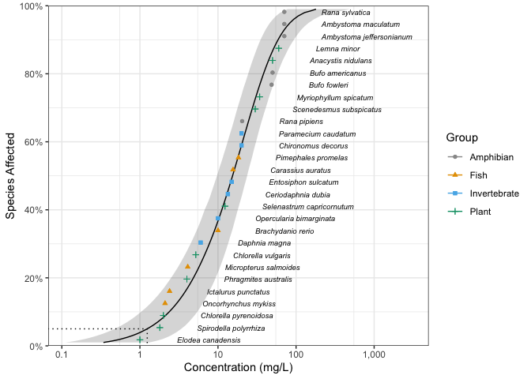

ssdtools is an R package to plot and fit Species Sensitivity Distributions (SSD).
SSDs are cumulative probability distributions which are fitted to toxicity concentrations for different species as described by Posthuma et al. (2001). The ssdtools package uses Maximum Likelihood to fit distributions such as the log-normal, gamma, log-logistic, log-Gumbel, Gompertz and Weibull. The user can also provide custom distributions. Multiple distributions can be averaged using Information Criteria. Confidence intervals on hazard concentrations and proportions are produced by parametric bootstrapping.
Installation
To install the latest version from CRAN
install.packages("ssdtools")
To install the latest development version:
install.packages("remotes") remotes::install_github("bcgov/ssdtools")
Introduction
ssdtools provides a data set for several chemicals including Boron.
library(ssdtools) boron_data #> # A tibble: 28 x 5 #> Chemical Species Conc Group Units #> <chr> <chr> <dbl> <fct> <chr> #> 1 Boron Oncorhynchus mykiss 2.1 Fish mg/L #> 2 Boron Ictalurus punctatus 2.4 Fish mg/L #> 3 Boron Micropterus salmoides 4.1 Fish mg/L #> 4 Boron Brachydanio rerio 10 Fish mg/L #> 5 Boron Carassius auratus 15.6 Fish mg/L #> 6 Boron Pimephales promelas 18.3 Fish mg/L #> 7 Boron Daphnia magna 6 Invertebrate mg/L #> 8 Boron Opercularia bimarginata 10 Invertebrate mg/L #> 9 Boron Ceriodaphnia dubia 13.4 Invertebrate mg/L #> 10 Boron Entosiphon sulcatum 15 Invertebrate mg/L #> # … with 18 more rows
Multiple distributions can be fit using ssd_fit_dists()
boron_dists <- ssd_fit_dists(boron_data)
and plot using the ggplot2 generic autoplot

The goodness of fit can be assessed using ssd_gof
ssd_gof(boron_dists) #> # A tibble: 3 x 9 #> dist ad ks cvm aic aicc bic delta weight #> <chr> <dbl> <dbl> <dbl> <dbl> <dbl> <dbl> <dbl> <dbl> #> 1 llogis 0.487 0.0993 0.0595 241. 241. 244. 3.38 0.11 #> 2 gamma 0.440 0.117 0.0554 238. 238. 240. 0 0.595 #> 3 lnorm 0.507 0.106 0.0703 239. 240. 242. 1.40 0.296
and the model-averaged 5% hazard concentration estimated using ssd_hc
print(boron_hc5) #> # A tibble: 1 x 6 #> percent est se lcl ucl dist #> <dbl> <dbl> <dbl> <dbl> <dbl> <chr> #> 1 5 1.31 0.808 0.527 3.57 average
Model-averaged predictions complete with confidence intervals can be produced using the stats generic predict
and plotted together with the original data using ssd_plot.
ssd_plot(boron_data, boron_pred, shape = "Group", color = "Group", label = "Species", xlab = "Concentration (mg/L)", ribbon = TRUE ) + expand_limits(x = 3000)

Information
Posthuma, L., Suter II, G.W., and Traas, T.P. 2001. Species Sensitivity Distributions in Ecotoxicology. CRC Press.
Get started with ssdtools at https://bcgov.github.io/ssdtools/articles/ssdtools.html.
A shiny webpage developed for non-R-users is available at https://bcgov-env.shinyapps.io/ssdtools.
The ssdtools package was developed as a result of earlier drafts of:
Schwarz, C., and Tillmanns, A. 2019. Improving Statistical Methods for Modeling Species Sensitivity Distributions. Province of British Columbia, Victoria, BC. Available from http://a100.gov.bc.ca/appsdata/acat/documents/r57400/2_1568399094009_8398900200.pdf.
The CCME data.csv data file is derived from a factsheet prepared by the Canadian Council of Ministers of the Environment. See the data-raw folder for more information.
Getting Help or Reporting an Issue
To report bugs/issues/feature requests, please file an issue.
Citation
To cite ssdtools in publications use:
Thorley, J. and Schwarz C., (2018). ssdtools An R package to fit
Species Sensitivity Distributions. Journal of Open Source Software,
3(31), 1082. https://doi.org/10.21105/joss.01082
A BibTeX entry for LaTeX users is
@Article{,
title = {{ssdtools}: An R package to fit Species Sensitivity Distributions},
author = {Joe Thorley and Carl Schwarz},
journal = {Journal of Open Source Software},
year = {2018},
volume = {3},
number = {31},
pages = {1082},
doi = {10.21105/joss.01082},
}How to Contribute
If you would like to contribute to the package, please see our CONTRIBUTING guidelines.
Code of Conduct
Please note that the ssdtools project is released with a Contributor Code of Conduct. By contributing to this project, you agree to abide by its terms.
License
The code is released under the Apache License 2.0
Copyright 2015 Province of British Columbia
Licensed under the Apache License, Version 2.0 (the “License”); you may not use this file except in compliance with the License. You may obtain a copy of the License at
http://www.apache.org/licenses/LICENSE-2.0
Unless required by applicable law or agreed to in writing, software distributed under the License is distributed on an “AS IS” BASIS, WITHOUT WARRANTIES OR CONDITIONS OF ANY KIND, either express or implied. See the License for the specific language governing permissions and limitations under the License.

ssdtools by the Province of British Columbia is licensed under a Creative Commons Attribution 4.0 International License.